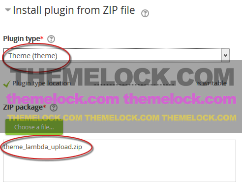

Installing the Theme
Upload and install via ZIP file
- Login to your Moodle site as an admin.
- Go to Administration > Site administration > Plugins > Install plugins.
- Select Theme as the appropriate plugin type.
New in 2.9: The plugin type will be automatically detected - you can skip this step! - In your downloaded package from ThemeForest, open the folder Theme.
- Choose the appropriate upload file for your Moodle version: The file theme-lambda-upload-moodle_25-28.zip can be installed on all Moodle version from 2.5 to 2.8. The file theme-lambda-upload-moodle_29.zip is for an installation on Moodle 2.9.
- Upload the appropriate ZIP file, tick the acknowledgement checkbox, then click the button 'Install plugin from the ZIP file'.
- Check that you obtain a 'Validation passed!' message, then click the button 'Install plugin'.

During the next steps the Moodle database will be upgraded. Though you can already set up the theme options at this stage, it is recommended to leave the theme options at the default settings at first and just klick Save Changes to continue.
Changing the theme
In Moodle you can select different themes depending upon the device that will be viewing Moodle. For example, you might have one theme for computers with monitors and another for mobile phones and another for tablets. Since Theme Lambda is a responsive theme, you only have to select it as your default theme.
- Log in as admin and go to Administration > Site administration > Appearance > Themes > Theme Selector
- Click on "Clear theme caches" button
- Click on the "Select theme" button on the right of the current theme being used for the device
- Scroll down to find the theme you wish to use
- Click the "Use theme" button next to that theme
- Moodle will tell you it has been saved as the default theme
- Check your Moodle site by going to the Moodle site's home page
- You may have to refresh your browser to see the new theme